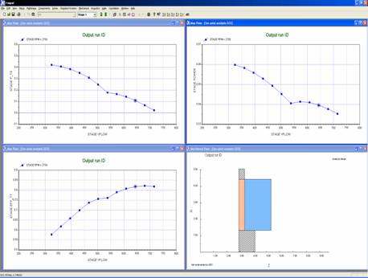
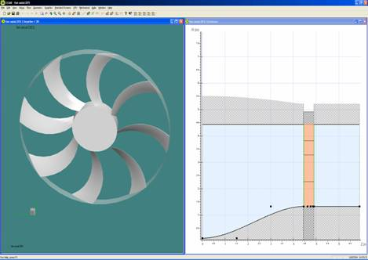
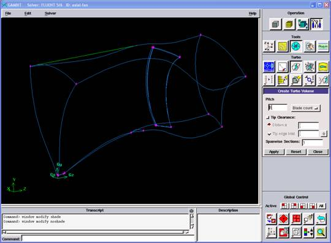
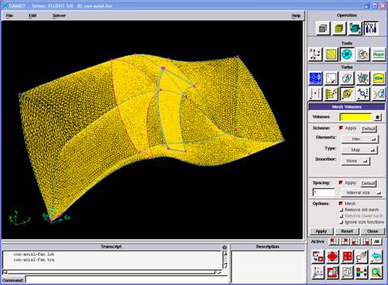
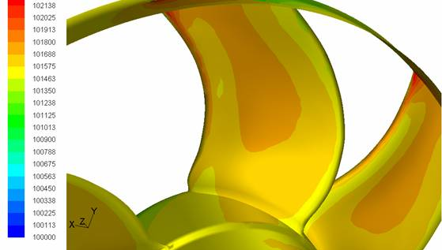
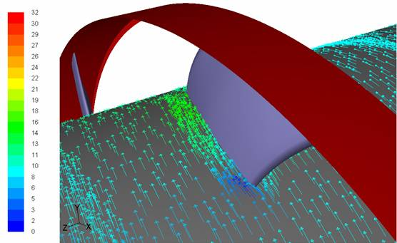
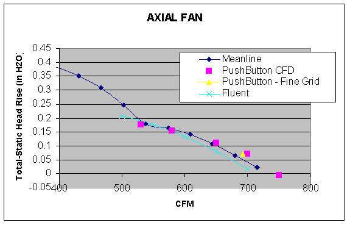

Ahmet Açýkgöz, Mustafa Ö. Geliþli, Emre Öztürk
2006, Ýstanbul
ANOVA Mühendislik
www.anova.com.tr
Not: Bu çalýþma, Eylül 2008'de TurkCADCAM.net portalýndan yayýna baþlamýþtýr.
1. Giriþ
Geliþen otomotiv sektöründe, araç performansýný arttýrmak ve gürültü seviyesini düþürmek amacýyla birçok çalýþma yürütülmektedir. Radyatör fanlarý da bu çalýþmalardan biri olup, düþük enerji harcayarak yüksek performanslý ve düþük gürültü seviyesinde fanlarýn tasarlanmasý üzerinde çalýþýlmaktadýr.
2. Fan Tasarým Metodolojisi
Fan tasarýmý yapabilmek için fanýn basma yüksekliði, debi ve devir bilgisine ihtiyaç vardýr. Bu parametreler fanýn çalýþacaðý ortam düþünülerek çýkarýlmasý gerekir. Fanýn basma yüksekliði fanýn çalýþacaðý sistem içerisinde, çalýþma debisindeki statik basýnç kayýplarýnýn tümüdür. Fanýn debisi, fanýn çalýþacaðý ortamda istenilen debi miktarýdýr. Fan devri ise, bu basma yüksekliði ve debi deðerinde fanýn motor üzerindeki dönüþ devridir. Bu parametreler Fanpal programýna girildiði taktirde Þekil 1'deki gibi fanýn performans deðerlerini hesaplamýþ oluruz. Bu deðerler;
- Debi-basma yüksekliði eðrisi
- Debi-verim eðrisi
- Debi-güç eðrisi
- Fan 2D görüntüsü
- Hýz üçgenleri
- Tahmini fan gürültü seviyesidir.
Bir boyutta yapýlacak optimizasyonlardan sonra fanýn tüm deðerlerinin hesabý Fanpal programýnda tamamlanýlýr.
Ýkinci aþamada fanýn çizimi yapýlmalýdýr. Axcent programý Fanpal datalarýný kullanarak faný otomatik olarak çizebilmektedir (Þekil 2). Daha sonra fan kanadýna fan gürültüsünü azaltacak yeni þekiller verilebilinir.

Þekil 1. Fan Performans Eðrileri

Þekil 2. Fan çizimi ve fana þekil verilmesi
3. CFD Analizleri
Fanlarýn CFD analizini yapabilmek için, bir rüzgar tüneline koymak gerekir. Bu tüneller standartlarda tariflidir (Örneðin, AMCA 210). Fanýn geometrisi Axcent programýndan Fluent'in çizim programý olan Gmbit'e aktarýlýr. Fanlar standartlara uygun modellemesi Gambit programýnda yapýlarak, fanýn CFD modeli çýkartýlýr (Þekil 3).

Þekil 3. Fan CFD modeli çizimi
Daha sonra rüzgar tünelindeki fanýn að tabakasý oluþturulur. Bu iþlem için de Gambit programý kullanýlýr (Þekil 4). Eksenel fanlarý periyodik olduðu için iki kanat arasýný modellemek yeterli olacaktýr. Sayýsal að tabakasý oluþtururken dikkat edilmesi gereken, kanat yüzeyine sýnýr tabakasý kullanýlmasý gerekir. Bu sayede fanýn performans deðerleri hassas bir þekilde elde edilir.

Þekil 4. Fanýn sayýsal aðý
Fanýn sayýsal að tabakasý oluþturduktan sonra, fan modeli Fluent'e transfere edilir ve burada sýnýr koþullarý tanýmlanýr. Fanlarda sýnýr koþulu olarak giriþte debi veya basýnç, çýkýþta basýnç, fanýn dönüþ devri ve akýþkan özellikleri programa girilir. Sýnýr koþulu olarak giriþe 0 Pascal, çýkýþa 0 Pascal tanýmladýðýmýzda, fan performans eðrisinin debi eksenini kestiði noktayý bulmuþ oluruz. Fan eðrisinin diðer noktalarýný elde etmek için geri basýncý arttýrarak analizleri tekrarlamamýz gerekir.
Þekil 5'de, Fluent'de analizi yapýlmýþ bir fan üzerindeki statik basýnç daðýlýmý Þekil 6'da hýz daðýlýmý görülmektedir. Fanýn motora bindirdiði yük ise kanat üzerindeki statik basýncýn yüzey integralini alarak kanada binen kuvveti, bu kuvvetin, fan merkezine göre momentini alarak hesaplanabilir.

Þekil 5. Fan statik basýnç daðýlýmý

Þekil 7. Fan hýz daðýlýmý
4. Sonuç
Yapýlan bu çalýþmada, bir radyatör fanýn Fanpal, Axcent yazýlýmlarý ile tasarlanmýþ ve Fluent yardýmý ile gerçek hayatta nasýl çalýþtýðý hesaplanmýþtýr. Daha sonra içlerinden seçilen en iyi bir fanýn prototipi yapýlýp deneyleri tamamlanmýþtýr. Elde edilen sonuçlar Þekil 8'de verilmiþtir.

Þekil 8. Analiz sonuçlarýnýn deneylerle kýyaslanmasý
Yazýlýmlar sayesinde bir fanýn performans eðrilerini sanal ortamda prototip veya kalýp yaptýrmadan çýkarmak, farklý alternatifleri denemek, motor-fan iliþkisini kurmak mümkün olmuþtur ve yapýlan 1 prototip ile istenilen fan elde edilmiþtir. Bu sayede gereksiz prototip imalatý ve gereksiz kalýp maliyeti olmamýþtýr. |